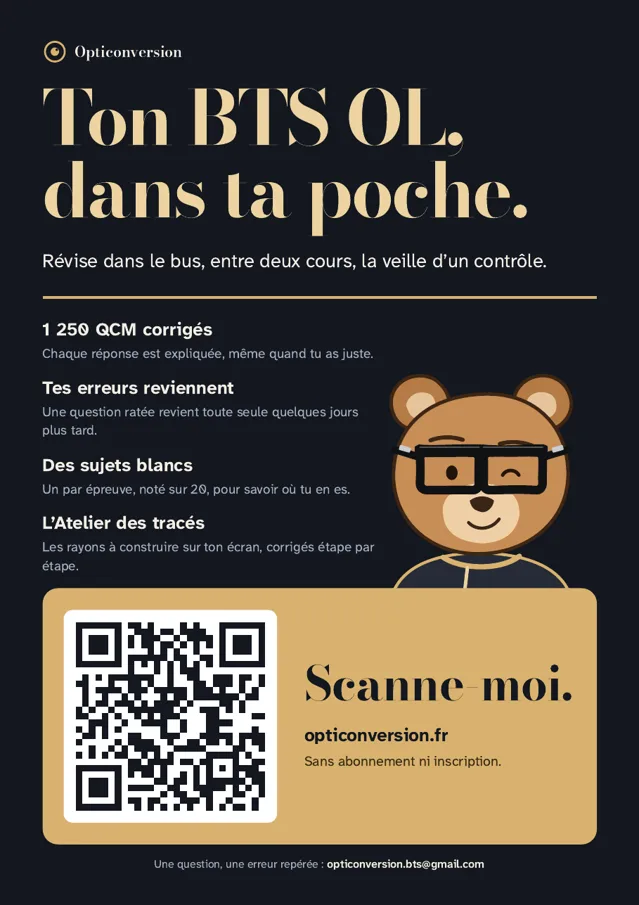
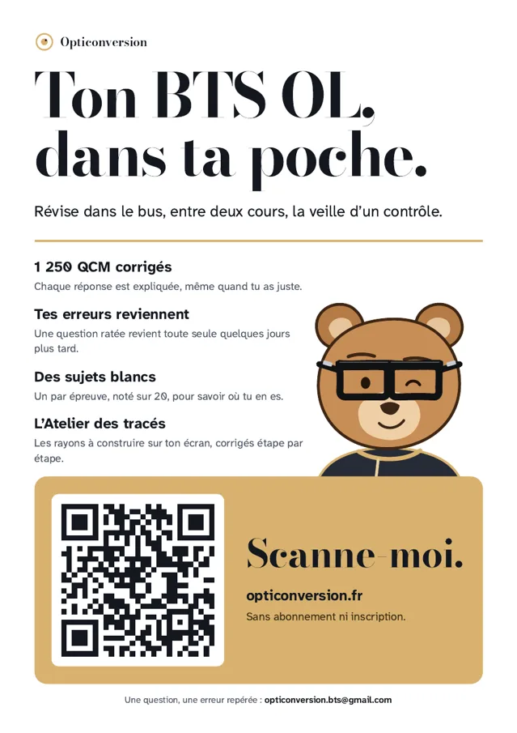

Pour les profs
Cette page n'est pas dans le menu du site. Elle est faite pour les enseignants du BTS Opticien-Lunetier qui veulent proposer Opticonversion à leurs élèves.
Le site en quelques lignes
Opticonversion fait réviser les cinq épreuves du BTS Opticien-Lunetier : 1 250 QCM corrigés et expliqués, un sujet blanc par épreuve noté sur 20, l'Atelier des tracés et des outils de calcul avec le détail comme sur la copie. Les questions ratées reviennent toutes seules quelques jours plus tard.
Le site est gratuit et se passe de compte. Les énoncés et les chiffres sont écrits pour le site : ils ne reprennent pas les sujets ni les corrigés officiels.
Une affiche pour votre salle
Une affiche A4 à imprimer, avec un QR code qui ouvre le site. Elle existe en deux versions.


Un lien direct vers une épreuve
Pour envoyer vos élèves droit sur les questions de votre matière :
- Analyse de la vision (U5)
opticonversion.fr/qcm.html#U5 - Économie-gestion (U3)
opticonversion.fr/qcm.html#U3 - Optique géométrique et physique (U42)
opticonversion.fr/qcm.html#U42 - Étude technique des systèmes optiques (U43)
opticonversion.fr/qcm.html#U43 - Mathématiques (U41)
opticonversion.fr/qcm.html#U41
Une erreur, une remarque
Si vous repérez une erreur dans une question ou si vous avez une suggestion, écrivez à opticonversion.bts@gmail.com.